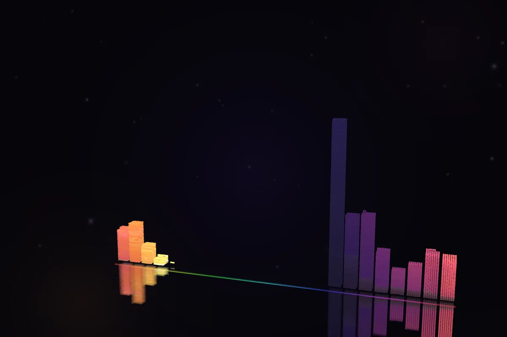
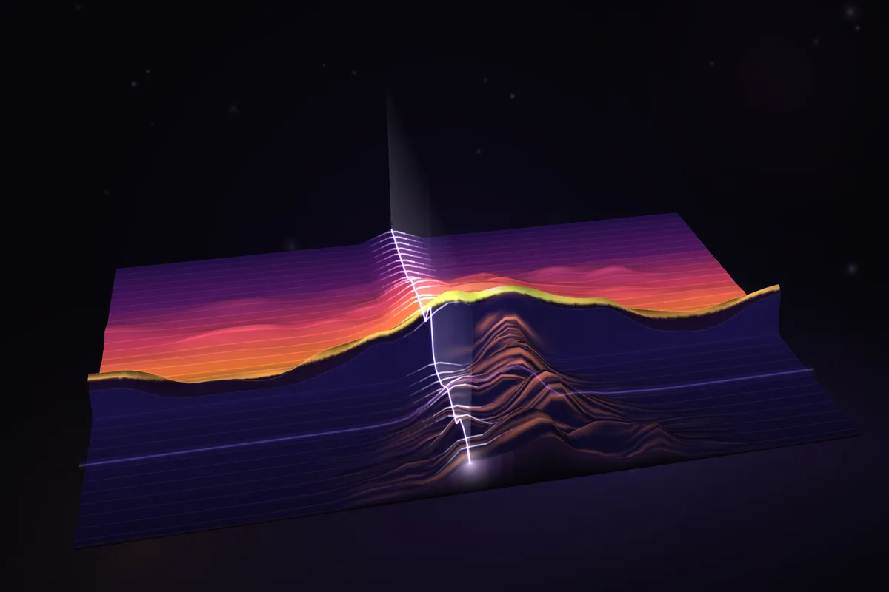
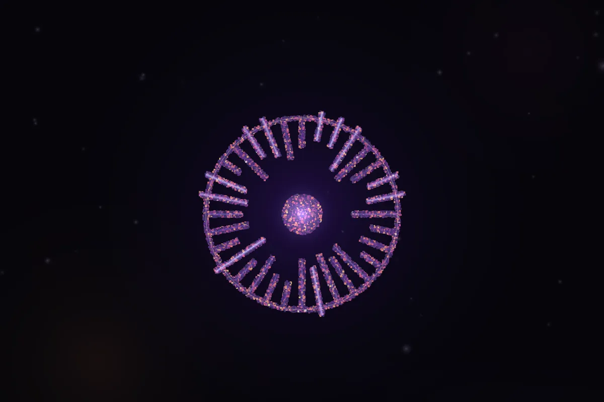
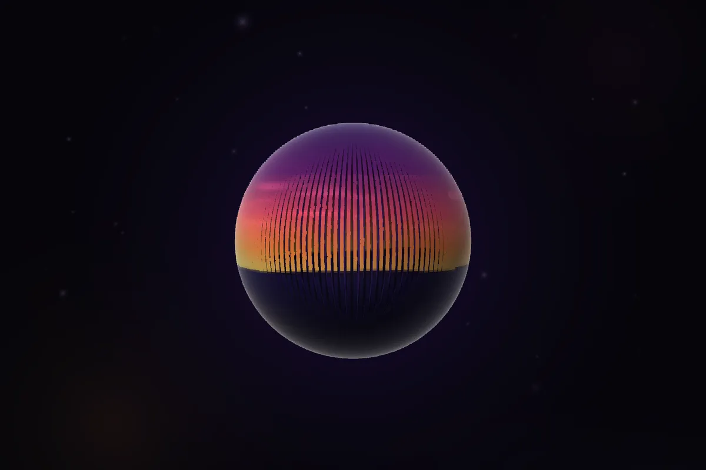
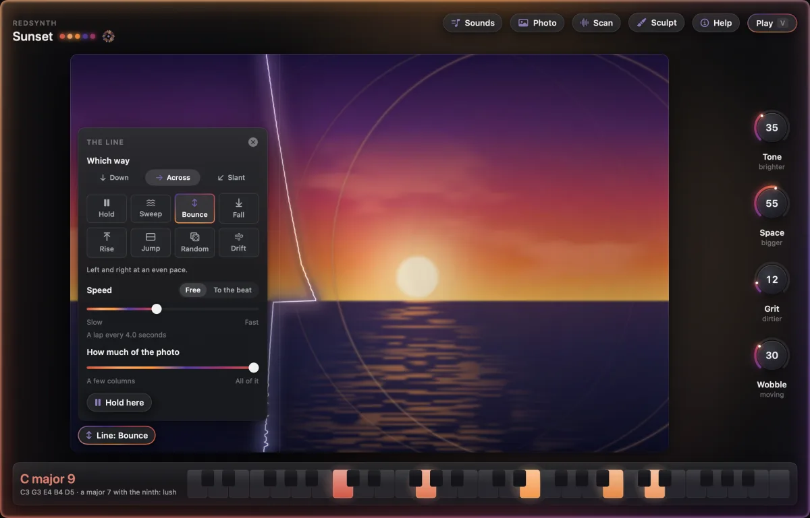
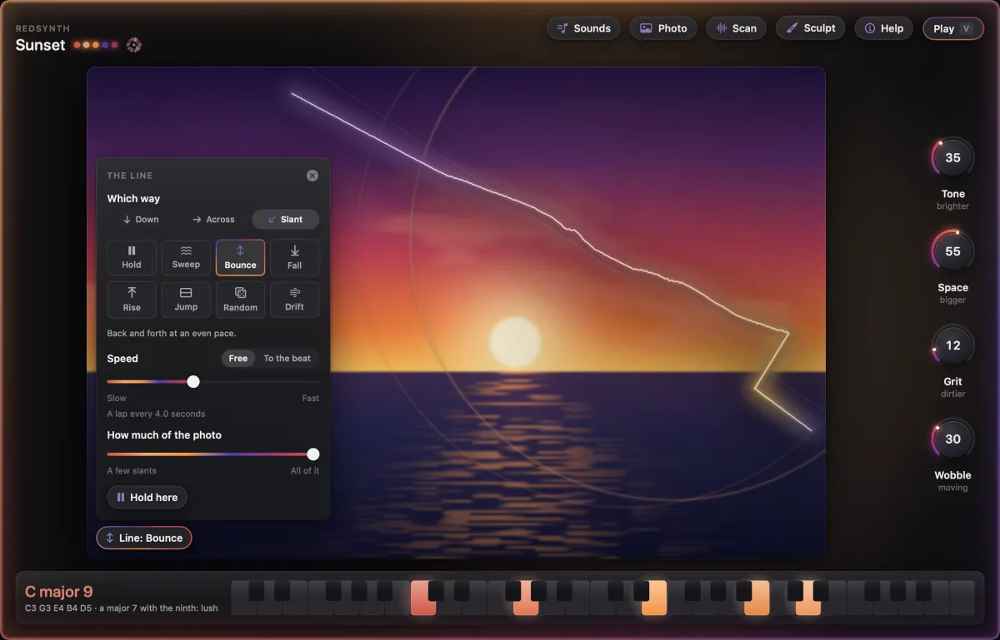
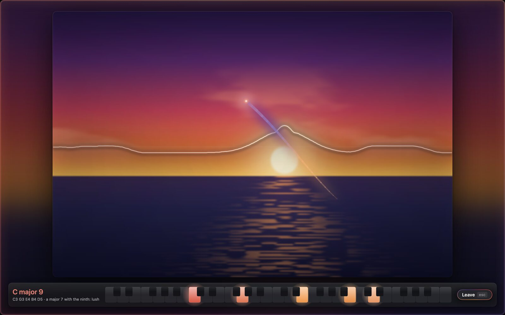

The photo instrument
A photo goes in, an instrument comes out. This chapter is what happens in between, one idea at a time, and what you can do with the result.
Getting a photo in
- iPad Tap Photo. The system's photo picker opens. The app only ever sees the one photo you choose.
- Mac Click Photo and pick a file, or drag a picture from Finder onto the window.
- Drop two or three photos together and they become one sound: a space.
- PNG, JPEG and HEIC all work. Big photos are fine; the app reads them at up to 2048 pixels on the long side.
- Any picture works: a landscape, a face, a painting, a screenshot, a page of text. Very different pictures make very different instruments.
The photo becomes a new sound named after it. Your other sounds aren't touched. It's kept on your device under Your photos in Sounds, so choosing a built-in sound never loses it.
The breakdown: what you're watching
When a photo arrives, the app takes it apart on the whole window, and plays it while it does. It isn't decoration. Each act shows a real part of the instrument, drawn from the same numbers the sound uses.
It is one scene in 3D with a moving camera, and it lasts twenty seconds. Every pixel of the small reading stays on stage the whole time and takes a new place in each act.






| You see | What it is | You hear |
|---|---|---|
| The photo arrives and a line reads across it, lifting its pixels | The app's small reading of the picture, 64 by 64. It starts where your eye would go first. | Five quiet notes |
| The pixels stack into towers by colour, then roll into a wheel | How much of each colour there is. | The vowel arriving |
| A flash, then a burst of stars | The strike. The stars are the picture's repeating patterns: each is one tone that rings when you hit the object. | Those tones ringing |
| A rolling landscape | The picture's columns, left to right. This is the tone that sings while you hold a note. | A chord rising |
| Sparks over the landscape | The busiest patches of the picture. | Glints over the top |
| A round sign, then an orb | The photo's signature: a pattern worked out from every pixel. | The last chord, and the photo is back |
A tap skips it. If you've turned on Reduce Motion in your device's settings, the app plays a shorter version that crossfades between still pictures instead of flying.
How a photo becomes a sound
Start with the smallest idea. A photo is rows of coloured dots. Read one row from left to right and its light and dark make a wave. A smooth row, like sky or water, is a soft wave. A busy row, like leaves or text, is a jagged wave: brighter and buzzier.
The app builds on that in three ways. The How the photo plays button, beside Photo, chooses which. It reads Scan, Strike or Space, and its menu says in one line what each one does.
| How it plays | The idea | Good for |
|---|---|---|
| Scan | A line reads the photo as a wave. You choose where the line is, how it moves and which way it runs. The rest of the synth shapes it. | Pads, leads, anything you'd shape with the synth's own controls. |
| Strike | The photo is an object. You hit it and it rings; hold the note and it sings. | Bells, plates, strange pianos, voices. The one a new photo starts as. |
| Space | Two or three photos make a block you strike, with a loop flying through it. | Sounds that move. See Space. |
In a music app's parameter list, and on the Photo page of Edit, the same choice is called Photo Engine, and Scan and Strike go by their older names, Classic and Struck.
What Strike takes from your photo
| In the photo | In the sound |
|---|---|
| Its repeating patterns | The tones that ring when you strike it. Up to forty of them. |
| Its columns, left to right | The tone that sings while you hold. |
| Its average colour | A hint of a vowel, from one resonance. Pink sings a bright "ee", green a round "oo", and the colours between land between. A grey photo sings plain. The curve. |
| Its edges | How hard the mallet is. |
| Its busiest patches | Shimmer: small grains of the photo sparkling over the tone. |
What Scan takes from your photo
In Scan the photo also sets the synth around it, once, when it comes in. Nothing is random: the same photo always makes the same sound.
| The app reads | So it sets |
|---|---|
| Warm colours | A rounder, darker tone |
| Cool colours | A brighter tone |
| Lots of colour | More voices at once: a crowd instead of one |
| A busy picture | Movement, in time with the tempo |
| A bright picture | A quick, plucky start. A dark one: a slow swell |
| High contrast | More bite |
Step four of the Guide shows this list for your own photo, in the app's own words.
Every photo is its own instrument
Two things are true at once. Similar photos sound similar, because the sound follows the picture smoothly. And every pixel feeds a signature that sets fine details: tiny tunings, where tones sit left and right, the path the reading takes. Change one pixel and those details change. The same photo always makes the same instrument.
The line under the sound's name says what your photo became, for example "a pure glass bell that sings" or "a metal plate, 40 ringing tones".
The scan line
The glowing line across the photo is the scan line. It follows the shape of the part of the photo it's reading, so you can see the wave you hear.
- Drag on the photo and the line jumps to your finger.
- In the pad's Photo mode, moving a finger up and down moves it while you play.
- In Scan the line chooses what you hear. Strike and Space read the photo their own way, so there the line doesn't change the sound.
- In a music app it's a parameter called Scan, so you can record its movement.
The Line panel: how it moves

The line can move by itself while you play. Tap the Line pill in the photo's bottom-left corner. It reads, for example, Line: Sweep. A panel opens:
| Move | The line |
|---|---|
| Hold | Stays where it is. Drag on the photo to place it. |
| Sweep | Glides up and down, easing at each end. |
| Bounce | Up and down at an even pace. |
| Fall | Top to bottom, then back to the top. |
| Rise | Bottom to top, then back to the bottom. |
| Jump | Jumps between two places. |
| Random | A new place at each step. |
| Drift | Wanders slowly, never quite repeating. |
- Speed: Free is a slider from slow to fast, and the panel says how long one lap takes. To the beat makes one lap a note length (a whole note down to a sixteenth) at the tempo.
- How much of the photo: from a few rows to all of it.
- Hold here stops the line where it is now.
The line drawn is the line you hear: it moves on the screen as it moves in the sound.
Which way the line runs


At the top of the Line panel, Which way sets how the line crosses the photo:
- Down: the line lies flat and reads rows, top to bottom. This is how every sound starts.
- Across: it stands upright and reads columns, left to right.
- Slant: it runs corner to corner.
The same photo sounds different each way. Upright stripes show it best: a flat line crosses them and the tone is bright and busy; an upright line runs along one stripe and the tone is plain. The moves turn with the line: in Across, Sweep goes left and right.
Which way is for Scan only. Strike and Space always read the rows. In a music app the parameter is Scan Direction (Down, Across or Diagonal).
What it strikes as: one photo, four instruments
When the photo plays as Strike, the How the photo plays menu has a second part, Strike it as. It changes what the photo becomes, and the button then says so, for example Strike: Pluck. The photo's reading stays the same; the instrument built from it changes. Each choice says in one line what you'll hear. Choosing one replays the middle of the breakdown (the wheel, the strike, the sing, the shimmer: about seven seconds) with that role's notes, and the strike's words name the role, for example "A ladder bass". The picture in the replay is the same for every role; the sound is the role's.
| Strike it as | You hear | What the photo drives |
|---|---|---|
| Ringing object | An object you hit, that sings: ringing tones, a vowel, shimmer. | Everything: pattern, columns, colour, edges. |
| Plucked string | A plucked string. In tune on every key, clear and light. | The string starts as the photo's most eye-catching row. Darkness sets how long it rings; edges and contrast, how bright it stays; busyness adds noise to the pluck. |
| Ladder bass | A growling bass through a ladder filter. One note at a time; overlap two notes and it slides. | Warmth sets the filter; contrast, its resonance; edges, the drive; darkness, the sub underneath. |
| Clean lead | A bare lead: the photo's six strongest harmonics, no filter, a vibrato that comes in after a moment. | Contrast sets the attack; colour, the vibrato's depth; busyness, its speed. |
- Ladder bass plays one note at a time, on purpose. Its sub fades out as you go up the keyboard, so higher notes don't turn to mud.
- Plucked string and Clean lead respond to how hard you play: a soft pluck is dull, a soft clean note is nearly a pure tone.
- This choice belongs to Strike. Scan and Space ignore it.
- In a music app the parameter is Photo Role: Struck, Pluck, Ladder bass or Clean.
Try this
- Add a photo. Hold a chord. That's a ringing object.
- Open How the photo plays and choose Plucked string. Play single notes up and down, soft then hard.
- Choose Ladder bass. Play low. Overlap two notes and hear the slide.
- Choose Clean lead. Hold one note and wait for the vibrato.
Filters
A filter changes the picture before it becomes sound, so one photo gives several instruments. Open the Photo menu and choose Filter. In a space the menu lists First photo, Second photo and Third photo, each with a filter of its own. The photo is shown the way it is played.
| Filter | You see | You hear |
|---|---|---|
| Original | The photo as it is | Its colours, light and detail as they are |
| Cartoon | Flat colours, dark outlines | Stepped, square-ish, a little chiptune |
| Sketch | Pencil lines on paper | Thin, bright and edgy; the colour gone |
| Dream | A soft glowing blur | Round and smooth, few tones, a long ring |
| Spectrum | The photo as a heat map | Organ and bell, never harsh |
| Thermal | Heat-camera colours | The vowel follows the light instead of the colour |
The photo's light
The app picks five colours from your photo and lights the whole window with them: the glow round the edge, the flash of each note, the trails behind your fingers.
The twelve notes take those colours round the circle of fifths. Notes that sound good together get neighbouring colours. So a sweet chord sits on one side of the wheel, and a tense one spans it. (Scriabin's colour keyboard used the same circle-of-fifths idea.) The strip at the bottom lights the keys you hold and names the chord, with a few words about it ("a major 7 with the ninth: lush").
Play view

Tap Play (or press V) and the photo fills the window. The scan line becomes a ribbon of the row's wave; notes ripple across the picture. Leave or Esc goes back.
It's for playing, and for showing someone. Everything still works: the pad, a keyboard, the scan line.
When the sound is a space, Play view's stage is the space itself, and you turn it and play it by hand there.
Painting on a photo
The Sculpt button (the brush) opens the photo so you can paint on it: colours, ripples that become new ringing tones, Smooth and Restore. The whole of it is in Space and Sculpt.
The five-step guide
The Guide button walks a first photo through in five small steps, over the photo itself:
- Drop a photo. It moves on when one arrives.
- The line reads one row of the picture. You hear that row.
- Drag the line. It moves on by itself once you've moved it a little.
- What the photo set, in the app's own words for your photo.
- Play.
Skip works at any step. The app shows the guide once, and remembers.
Photos that work well
- For bells and plates: pictures with a regular pattern. Fences, bricks, waves, fabric, a window grid.
- For soft pads: smooth pictures. Sky, fog, water, a blurred light.
- For bright, buzzy sounds: busy pictures. Leaves, a crowd, a page of text.
- For a strong vowel: one clear colour.
- Try your own paintings and drawings. A brush stroke is a pattern too.
- The same scene at a different time of day is a different instrument. Take two and compare.